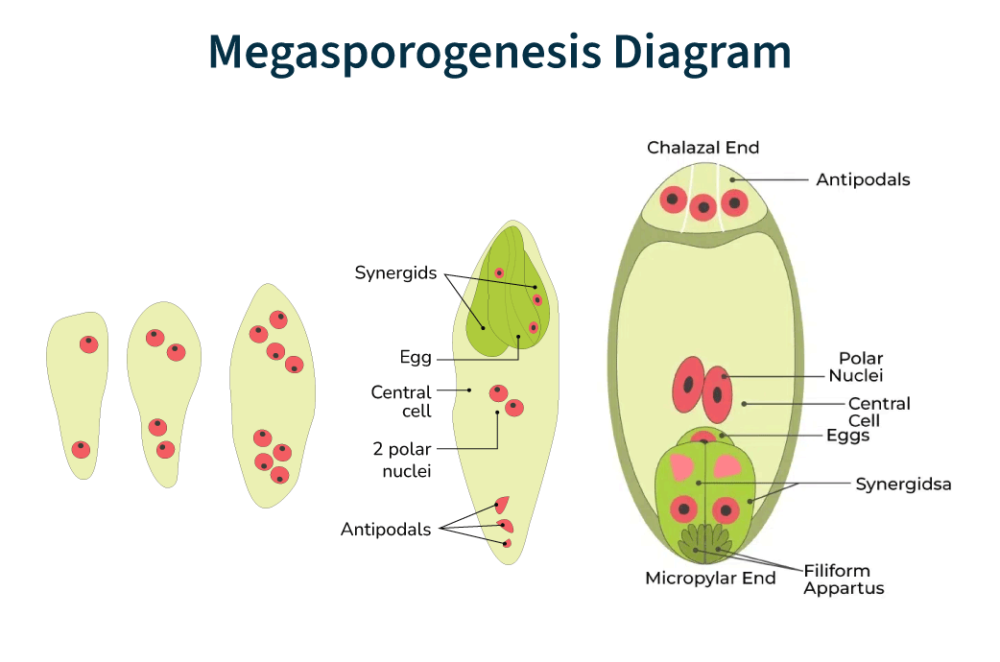
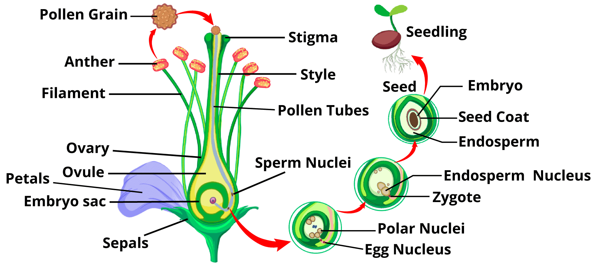

This is a portofolio webpage created by Talha Rahman with view to putting his coding skills into a practical project so that the clients can have a gist of his capabilites by assessing it.
Biology is essentially the science of life. The term "Biology" was created by combining the greek words Bios(life) and logos(knowledge). Just as the name suggests biology contains knowledges and informations about organisms. It is one of the preeminent sectors of science. The circumference of this sector myriad. It has also given birth to the medical science which is resposible for saving thousands of lives everyday at present. It helps us to thoroughly undestand the overall mechanisms of living creatures.
Microsporogenesis refers to the process in which the spore of a plant is developed. Initially there is only one nucleus inside a spore. But it gets devided via mitosis division and gives birth to two new nuclei; Tube Cell & Generative Cell. The tube cell grows up and creates a tube which is called Polen Tube and for the Genrative Cell, it goes through another mitosis division and gives birth to two new haploid(n) cells which are known as Male Gamets. The division of Generative Cell can either occur inside the spore or inside the style of a carpel.
Megasporogenesis refers to the process in which an ovary is developed. In the Nucellus tissue a cell becomes distinctively bigger than it's other siblings, later it goes through mitosis division and creates four haploid(n) cells among which three cells die leaving only the last cell alive. That cell then absorbs the remnants of the other three dead cells and turns into a embryo-sac. The embryo-sac initially contains one nucleus which later gets divided into two nuclei via mitosis divison. Each of the two nuclei later gets settled in each terminals of the embryo-sac. After that, each of them goes through two more mitosis division resulting in the birth of eight complete nuclei(four nuclei at each terminal). Later, one nucleus is sent into the center of sac from each terminal and the two nuclei into the center merges with each other giving birth to the Secondary Nucleus. The remaining six cells turns into a cell-like structure by surronding themselves with a bit of cytoplasm.
Generally fertilization refers to the process where a male gamet and a female gamet merges with each other and gives birth to a zygote(2n). But in terms of plants, it's a bit different. In this case, there are two male gamets, one of which merges with the egg and the other with the Secondary Nucleus. The one merging with the egg gives birth to a zygote(2n) whereas the one merging with the secondary nucleus creates a triploid cell(3n) known as Endosperm Cell. Endosperm Cell acts as the only source of nutrition of the zygote and helps it to grow efficiently. As two male gamets takes part in this process, this process is also called the Double Fertilization
This process starts with the zygote as it's inital cell. In this process, the zygote goes through the mitosis division and gets divided into two cells; Apical Cell and Basal Cell. The Apical Cell resides in the center of the embryo-sac whereas the Basal Cell resides at the base of the sac. Contemporarily, the Secondary Nucleus keeps thriving and at the end of it's process it turns into a Endosperm Cell; The only source of nutrition for the embryo. The Apical Cell turns into a embryo and gives birth to fetal stem, fetal root and fetal leaves whereas the Basal Cell turns into a suspensor for the embryo. After the embryo achieves completion, the whole embryo-sac solidifies and turns into a seed and the ovary surronding it turns into a fruit. Thus, the journey of a new plant begins!
